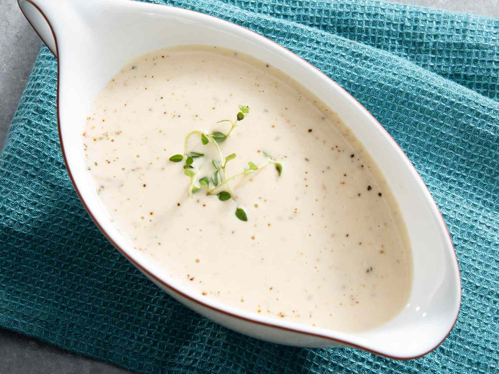

Bechamel

Description
A creamy classic - your standard white sauce!
Ingredients
- 4 tablespoons butter
- 2 tablespoons grated onion
- 2 tablespoons all-purpose flour
- 1 cup chicken broth
- 1 cup half-and-half
- 1/2 teaspoon salt
- 1/4 teaspoon ground white pepper
- 1 pinch dried thyme
- 1 pinch ground cayenne pepper
Steps
-
MICROWAVE METHOD: In microwave oven, melt butter in a 1-quart glass measuring pitcher for about 1 minute at HIGH.
-
Add grated onion and flour and mix well. Gradually add warm or room temperature chicken broth (NOT hot) and half-and-half to container, stirring constantly.
-
Cook uncovered for 5-6 minutes at HIGH or until sauce is thickened. Do NOT boil.
-
After 2 minutes, stir mixture, then stir again every 30 seconds to one minute as needed. When sauce reaches medium thickness, remove from microwave, add seasonings and stir. Mmmm!
-
STOVETOP METHOD: In a small saucepan, melt butter and stir in the flour, salt and white pepper. Add cold half-and-half and COLD chicken broth all at once. Stir well. Cook, stirring frequently, at medium heat until thick. Remove from heat and stir in seasoning.